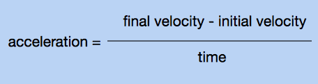
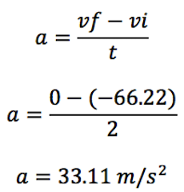
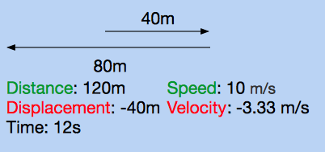
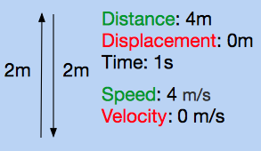
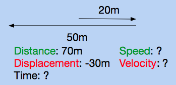
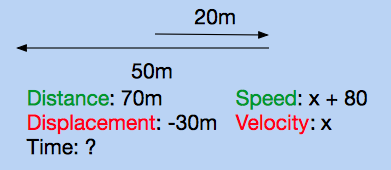
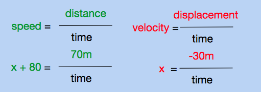
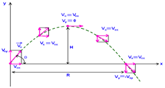

We've learned that displacement is the distance from the starting point to the ending point. We've learned that velocity is the rate at which displacement changes with respect to time, or that it can simply be found by dividing displacement by time. Acceleration will be the focus of this lesson, and it respresents how velocity changes with respect to time.
Acceleration
Thus far, we have only been dealing with nonaccelerated motion. This is motion where the velocity stays constant. However, in real life, rarely anything in motion stays at a constant velocity. For example, when you jump, you fall faster and faster after each second that has gone by. The mathematical relationship between acceleration, velocity, and time is represented by

Let's say that racecar driver starts off with an initial velocity of -66.22 meters per second. He accelerates to 0 meters per second in two seconds. We can find his average acceleration, because we know the initial velocity (-66.22), the final velocity (0), and the time (2).

Notice how the units for acceleration are meters per second squared. This can be confusing to interpret, but imagine that it represents "one meter per second per second." In other words, 33.11 meters per second squared means that after each second that passes, the velocity increases by 33.11 meters per second.
Direction of Acceleration
Like velocity, acceleration is a vector. This means that the direction matters. This can be visualized by defining acceleration as something you can feel. Whenever you feel a push or a pull, you are being accelerated. Imagine that you're in a car. There are three means of acceleration in a car: the gas pedal, the brake pedal, and the steering wheel. It's obvious that you can be accelerated with a gas pedal; while you press on it, your velocity will increase. While pressing this pedal, you feel yourself being pushed into the back of the car seat. While using the brake pedal, you "decelerate". This is also accelerated motion, it is negative acceleration. As you press the brake pedal, you feel yourself being thrust forward. The least intuitive means of accelerating is by using the steering wheel. If you round a corner at a constant 10 meters per second, it would seem that the velocity doens't change. However, it does, because velocity is speed with direction. While using the steering wheel, you are turning, therefore changing the direction. If you've ever taken a sharp corner without slowing down, you've felt the acceleration (when you were thrust into the side of the car), even though your speed didn't change at all.
This interactive program allows you to see the relationship between velocity and acceleration. Click on the window, and use the left and right arrow keys to accelerate the ball. When the right key is held down, the ball will be accelerated in the positive direction. When the left key is held down, the ball will accelerate in the negative direction. When no keys are held down, the ball will undergo no acceleration.
Practice Problems
1. A 100 meter dash sprinter starts at rest, and gets up to 20 meters per second in 4 seconds. What is his average acceleration?
2. A proton has an initial velocity of - 100,000,000 meters per second. It passes through a cathode tube, and is deflected in the opposite direction it was originally traveling in. After 10 seconds, its velocity is 100,000,000 meters per second. What was its average acceleration?
3. Near the surface of the earth, the acceleration due to gravity is roughly 10 meters per second downwards. If a ball is thrown upward with an initial velocity of 30 meters per second, how long is it in the air for until it reaches its highest point?
4. According to the program, is it possible to have a negative acceleration, but a positive velocity?
5. According to the program, is it possible to have a positive acceleration, but a negative velocity?
6. True or False.
If an object is not accelerating, it is at rest.
7. True or False.
If the object is at rest at a certain instance, it is not accelerating.
8. (Challenge) An object starts at rest, and accelerates uniformly at 10 meters per second square. How far is it from its starting point after 3 seconds?
Practice Answers
1.
Speed: 5 meters per second
Velocity: -5 meters per second
It travels 5 meters, so that is its distance. It falls down 5 meters, so the displacement is -5 meters by convention. To find the speed and velocity, divide the distance and displacement by time, respectively.
2.
Speed: 10 meters per second
Velocity: -3.33 meters per second
First find the distance and displacement. The distance is 120 meters, while the displacement is -40 meters. Then divide both by 12 seconds, to get average speed and velocity.

3.
Time: 1 second
Velocity: 0 meters per second
The athlete jumps up to two meters, so by the time she lands, she has traveled 4 meters. We want to solve for time, and we know speed and distance. Since speed is distance over time, time is distance over speed. Dividing 4 by 4 gives us one second. Since the athlete ends up where she started, her displacement is 0, and therefore her velocity is zero.

4.
It is not possible
If the ball is to the left of the starting point, this means negative displacement. Since velocity is displacement over time, it is impossible for the velocity to be positive if the displacement is negative.
5.
It is possible
The instantaneous velocity is a measure of the velocity at a single instance in time. If the ball is traveling to the right, then its instantaneous velocity is positive.
6.
False
Speed is always positive, even when the velocity is negative. Therefore, knowing the speed tells us nothing about the sign of the velocity.
7.
True
If the velocity is positive, that means the displacement is positive. If the displacement is positive, that means the distance is positive. Therefore, the speed is positive, because speed shares the same sign as distance, just as average velocity always shares the same sign as average displacement.
8.
True
If the speed is zero, the distance is zero. Therefore, the displacement is zero. Since the displacement is zero, the velocity is zero.
9.
False
If the velocity is zero, the displacement is zero. However, the distance can still be nonzero. One example is if you walk forward one meter, then back one meter. Your displacement is 0 meters, but your distance is 2 meters. Since the distance could be nonzero, the speed could be nonzero.
10.
Average Speed: 56 meters per second
Average Velocity: -24 meters per second
Time: 1.25 seoncds
Start by drawing the scenario. From the prompt, we automatically know the distance and displacement.

The prompt tells us that the difference between average speed and velocity is 80. Speed is always greater or equal to velocity, so in this scenario speed must be 80 meters per second greater than the velocity. We can represent this with variables: let x be velocity, and x + 80 be speed.

We know that speed is distance over time. We also know that velocity is displacement over time. Since we have variables for most of these criteria, we can write out equations for it.

Notice that there's a common variable, time. Solve for time, then we can set both equations equal to each other.

x represents velocity. Therefore the average velocity is -24 meters per second. The speed is the velocity plus 80 meters per second, so the speed is 56 meters per second. To find the time, we can either divide the distance by the speed, or the velocity by the displacement. Both calculations give you 1.25 seconds.
Back to Mechanics
